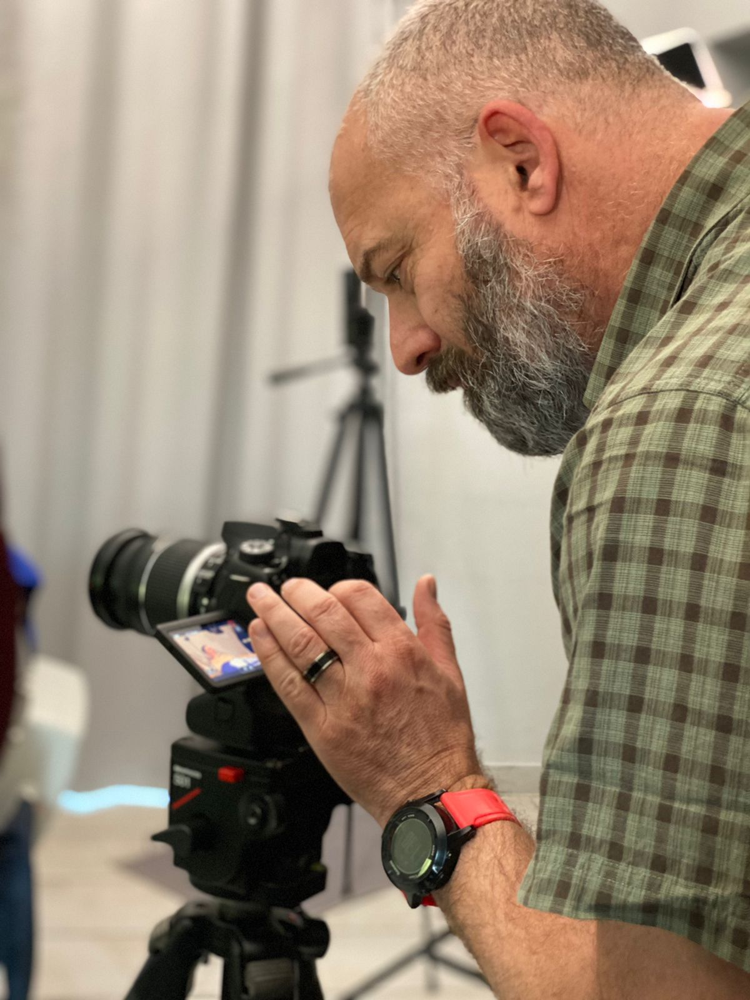

I’m Leon Steenkamp, a multimedia content producer based in Cape Town. I help businesses and organisations create clear, professional visual content that builds trust and drives engagement.
With over 20 years of experience in journalism, storytelling, and communication, I understand how to shape messages that connect with real audiences—not just look good on screen.
My work combines photography, video, and strategic thinking. Whether it’s a brand story, a campaign, or ongoing content, the focus is always the same: clarity, consistency, and impact.
I’ve worked across media, communications, and content production—creating photography, video, written content, and podcasts, while supporting campaigns focused on growth, engagement, and fundraising.

That experience means I bring more than technical skill. I understand how content fits into the bigger picture—how it’s used, where it’s seen, and what it needs to achieve.
Clients work with me when they need content that feels professional, communicates clearly, and reflects their brand with confidence.
Whether you need photography, video production, or a more consistent content approach, I focus on delivering work that is both visually strong and strategically useful.
Based in Cape Town, and available for projects locally and remotely.